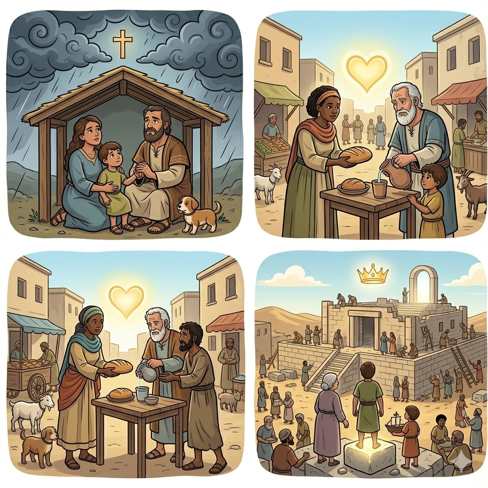
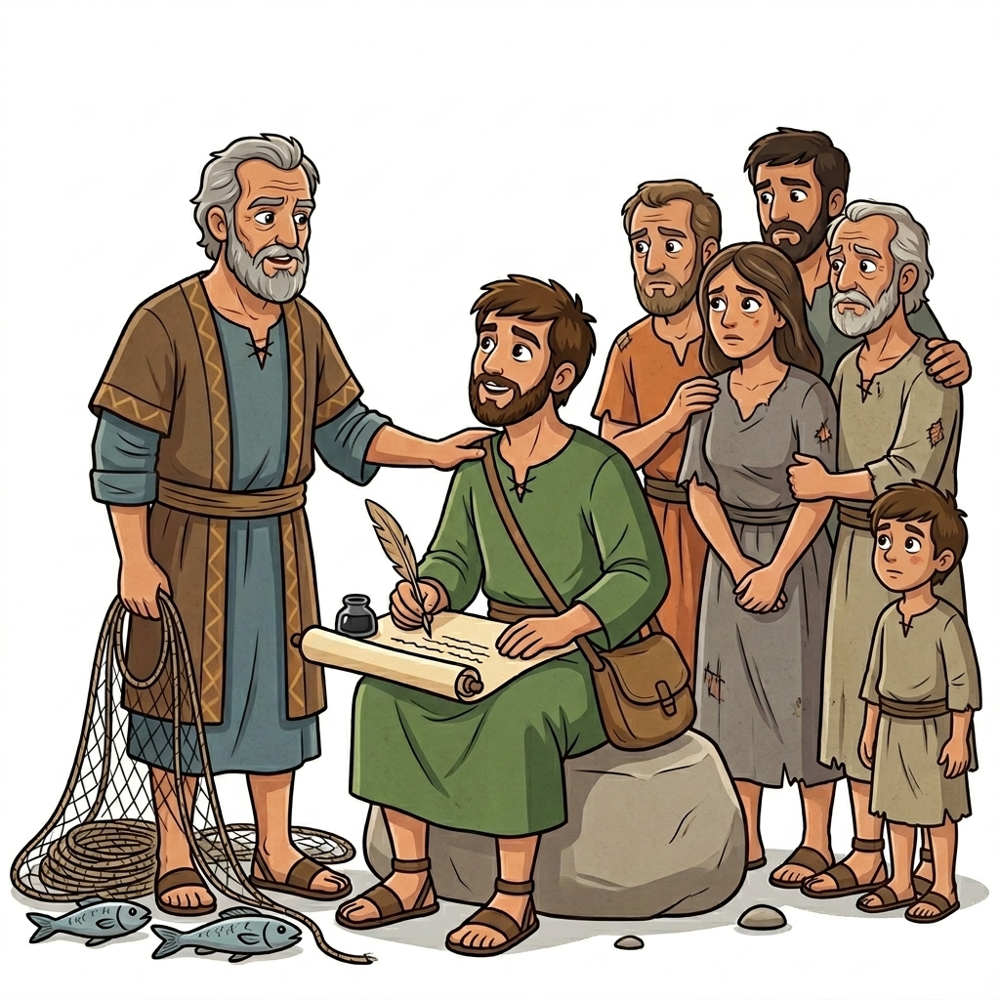
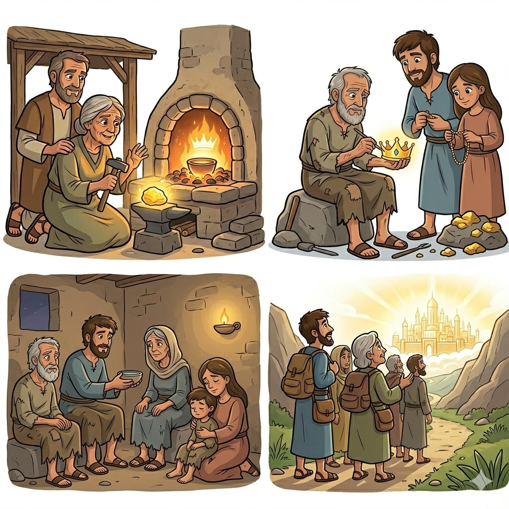
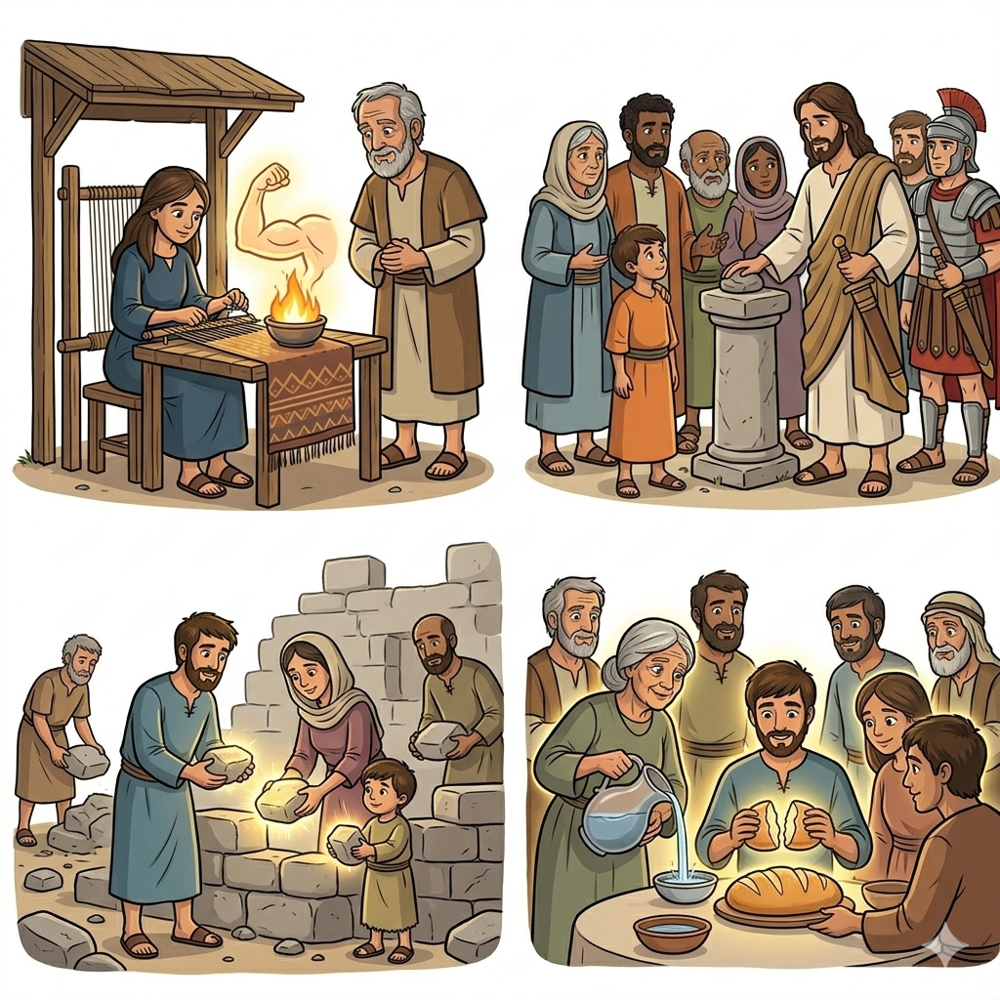
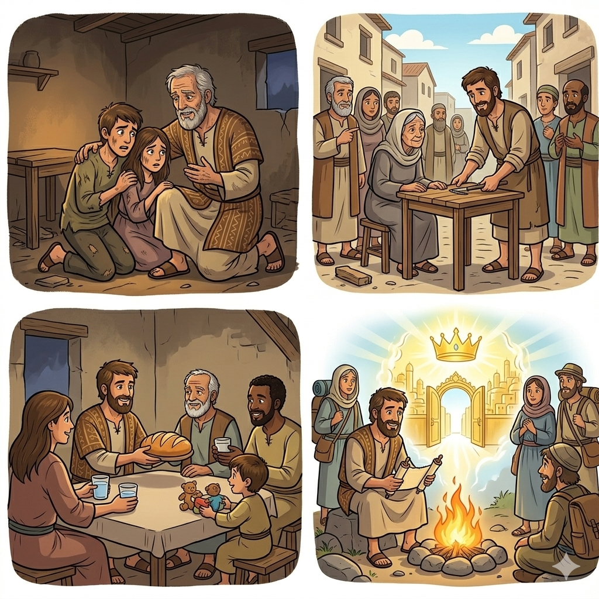
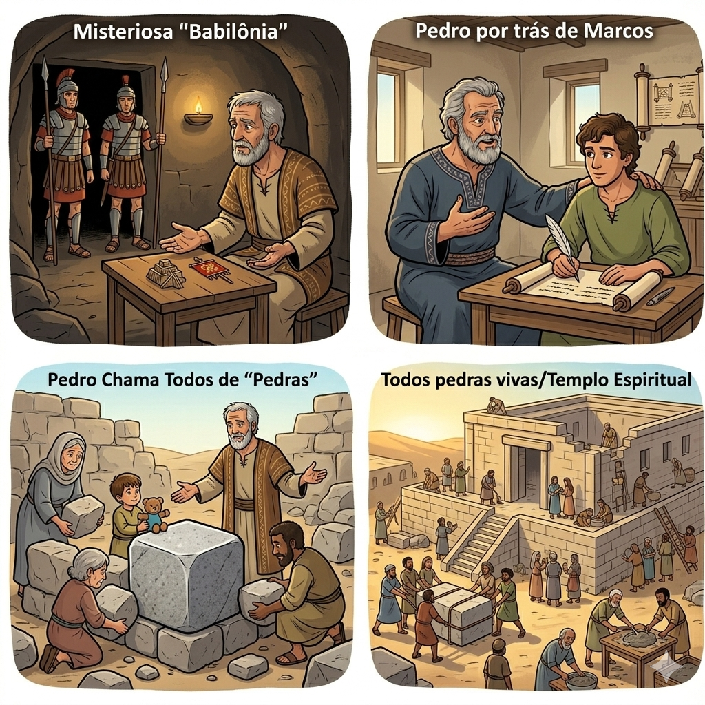

Esperança e Coragem no Sofrimento — Um Resumo Visual para Crianças
Quando as tempestades vierem,
E o mundo te fizer sofrer,
Lembra que tua fé é escudo,
E Jesus está com você!
Como ouro no fogo brilha,
Tua fé vai se fortalecer,
Nas provas, Deus te abraça,
E te ensina a vencer!
📖 1 Pedro 1:6-7
Ame de coração sincero,
Como Jesus nos amou,
Perdoe quem te machuca,
Pois Ele assim ensinou!
Seja humilde e bondoso,
Mesmo quando dói demais,
O amor cobre muitos erros,
E traz a verdadeira paz!
📖 1 Pedro 4:8
Você é pedra preciosa,
Escolhida pelo Rei,
Sua esperança está no céu,
Guardada pela fé!
Mesmo nas dificuldades,
Você pode celebrar,
Pois Jesus já venceu tudo,
E vai te coroar!
📖 1 Pedro 1:3-4

O pescador que Jesus transformou em líder! Pedro escreve esta carta cheia de amor e coragem para animar os cristãos que estavam sofrendo perseguição. Ele conhecia bem o sofrimento e tinha muita sabedoria para compartilhar!
Crentes espalhados pela Ásia Menor que estavam sendo maltratados por causa da fé em Jesus. Eles precisavam de encorajamento para não desistir e continuar firmes, mesmo quando tudo parecia difícil!
Pedro ensina que o sofrimento é como o fogo que purifica o ouro - ele torna nossa fé mais forte e brilhante! Mesmo nas dificuldades, podemos ter esperança porque Jesus já venceu tudo!
A carta mostra como viver de maneira santa: amando uns aos outros, sendo humildes, perdoando e fazendo o bem mesmo quando os outros são maus. Jesus é nosso maior exemplo!
Pedro lembra que somos peregrinos neste mundo e que nossa verdadeira casa está no céu! Nossa esperança está guardada lá, e nada pode tirar isso de nós!


Este livro nos ensina que a fé verdadeira não desiste quando as coisas ficam difíceis. Ela cresce e fica mais forte! Como um músculo que se exercita, nossa fé se fortalece nas provações.
Pedro mostra que Jesus é nosso maior exemplo de coragem e amor. Ele sofreu por nós, mas não revidou. Seguir Jesus significa confiar Nele e fazer o bem, mesmo quando dói!
Pedro escreveu para encorajar os cristãos que estavam passando por momentos difíceis. Ele queria que eles soubessem que não estavam sozinhos e que o sofrimento não duraria para sempre!
O objetivo é ensinar como viver de forma santa diante das dificuldades: sendo humildes, amorosos, perdoadores e sempre fazendo o bem. Nossa vida deve brilhar como luz no mundo!
Pedro quer que os cristãos mantenham os olhos fixos na esperança eterna! Não importa o que aconteça aqui, temos uma herança maravilhosa guardada no céu que ninguém pode roubar!


Pedro escreveu essa carta de Roma, mas ele a chamou de "Babilônia"!
Por quê? Porque Roma era o centro do império que perseguia os cristãos, assim como a antiga Babilônia havia perseguido o povo de Deus! Era um nome secreto que os cristãos entendiam perfeitamente!
💡 Dica: Isso mostra que Pedro estava em perigo também! Ele escrevia com coragem, mesmo arriscando sua própria vida para encorajar outros cristãos!
© 2025 - Trilho Kids
Desenvolvido com ❤️ para crianças